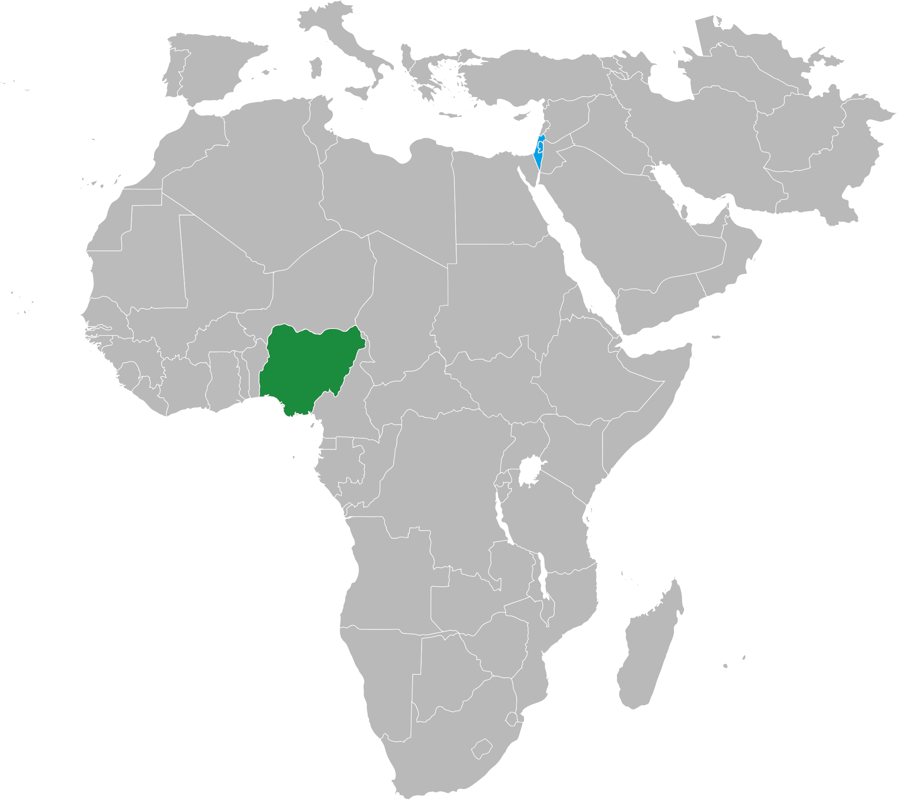

Přehled
Obecné informace
Nigérie, či Nigerijská federativní republika, je největším státem západní Afriky, který se rozkládá od Guinejského zálivu až do oblasti Sahelu. Má rozlohu 923 773 km². Nigérie se skládá z 36 států a každý z jednotlivých států má svou vládu vedenou guvernérem. Hovoří se zde převážně anglicky, ale také hausky, jorubsky nebo také i igbosky. Stát se v roce 1901 stal britským protektorátem a 1. října 1960 se tento stát stal nezávislým, když byl osvobozen od kolonií Velké Británie.
Obyvatelstvo
V Nigérii žije odhadem více než 194 milionů obyvatel, to ji dělá nejlidnatějším africkým státem. Obývá tu přes 250 etnických skupin, které se liší tradicemi, společností, jazyky a také náboženstvím. Hlavní 4 etnika jsou Hausové, Igbové, Fulbové a Jorubové. Díky velikému počtu etnických skupin existuje i stejný počet různých jazyků, které obyvatelé používají ke komunikaci.
Kvůli velice rychlé rostoucí populaci organizace OSN odhaduje, že se do roku 2100 zvýší populace v tomto státě minimálně na 730 milionů lidí. Díky tomu již milióny Nigerijců migrovaly do Evropy, Severní Ameriky a Austrálie. Příčina tak velkého přírustu obyvatel může velmi vysoké porodnosti, která v roce 2009 dosahovala hodnoty 5,6 živě narozených dětí na matku.
| Populace Nigérie | |
|---|---|
| Rok | Miliony |
| 1971 | 55 |
| 1980 | 71 |
| 1990 | 95 |
| 2000 | 125 |
| 2004 | 138 |
| 2008 | 151 |
| 2012 | 167 |
| 2020 | 204 |
Geografie
Nigérie hraničí na západě s republikou Benin (809 km hranice), na východě s Kamerunem (1975 km), na severovýchodě s Čadem (85 km) a na severu s Nigerem (1608 km). Na jihu je země omývána vodami Guinejského zálivu Atlantského oceánu, pobřeží má délku 853 km. Podnebí je tropické a vlhké, dešťové období je od konce května do poloviny října a období sucha od října do června. Na severu panuje semiaridní klima s vysokými teplotami, srážkové období je zkrácené na červenec – září. Pobřežní část Nigérie je nížinatá, vnitrozemí je převážně kopcovité. Horská pásma se táhnou podél hranic s Kamerunem od jihovýchodu na sever přes celou Nigérii. Nejvyšší horou je Chappal Waddi (2494 m.n.m.).
Dějiny Nigérie a jeho vývoj
První kolonie a země na území Nigerijského státu
Rané začátky osidlování na tomto území se dají vysledovat až k prehistorickým osadníkům žijícím v oblasti již v roce 1100 př. n. l. Po 9. století se začínají formovat první státy. Na severu dnešní Nigérie založil kmen Hausů, možná ještě před 9. stoletím, několik městských států. Vedle Hausů byly kulturně nejpokročilejším kmenem oblasti vždy Jorubové. Ti žili především na jihozápadě Nigérie a vyvinuli i vlastní náboženský systém zvaný Oriš. Nejmocnější stát byla Říše Oyo, která existovala od 15. století až do roku 1896, kdy byla rozvrácena Fulby.
Novodobá historie státu
V roce 1903 toto území (v té době Sokotský sultanát) ovládli Britové a stal se Britským protektorátem. Kolonizace skončila až v roce 1960 a tři roky poté vznikla oficiální Nigerská republika. Po dalších třech letech byla ovládnuta vojenskou juntou. Poté, co generál Sani Abacha zemřel na předávkování viagrou v roce 1998 se stát opět stal republikou až do dnešního dne.
Státní symboly
Vlajka
Vlajka Nigérie byla navržena Michaelem Taiwo Akinkunmim v roce 1959 a oficiálně schválena 1. srpna 1960. je rozdělena do tří svislých pruhů v barvách zelený, bílý a zelený.
Zelená barva znázorňuje lesy a přírodní bohatství země a bílá symbolizuje mír.
Znak
Znak Nigérie se skládá z černého štítu s vlnitými pruhami bílé barvy, které symbolizují průtok řeky Niger a Benue ve městě Lokoja. Černý štít představuje úrodnou půdu Nigérie a pár bílých koní zase důstojnost. Rudý orel znázorňuje úsilí a dvojbarevné proužky pod ním symbolizují bohatou zeminu, která leží na území státu.
Znak Nigérie taktéž drží motto "Unity and Faith, Peace and Progress", které znamená "Jednota a Víra, Mír a Pokrok".
Základní údaje
Geografie

| Hlavní město | Abuja |
|---|---|
| Rozloha | 923 768 km² |
| Nejvyšší bod | Chappal Waddi (2419 m n. m.) |
| Poloha | 9° s. š., 8° v. d. |
Obyvatelstvo
| Počet obyvatel | 204 219 658 (7. na světě, 2020) |
|---|---|
| Hustota zalidnění | 188,9 ob. / km² |
| HDI | ▲ 0,539 (nízký) |
| Jazyk | angličtina (úřední), hausa, yoruba, igboština, fulani |
| Národnostní složení |
|
Státní útvar
| Vznik | 1. října 1960 (nezávislost na Velké Británii) |
|---|---|
| Státní zřízení | prezidentská republika |
| Prezident | Muhammadu Buhari |
| Viceprezident | Yemi Osinbajo |
| Měna | Nigerijská naira ₦ (NGN) |
| HDP | 6 004 USD (126. na světě, 2015) |